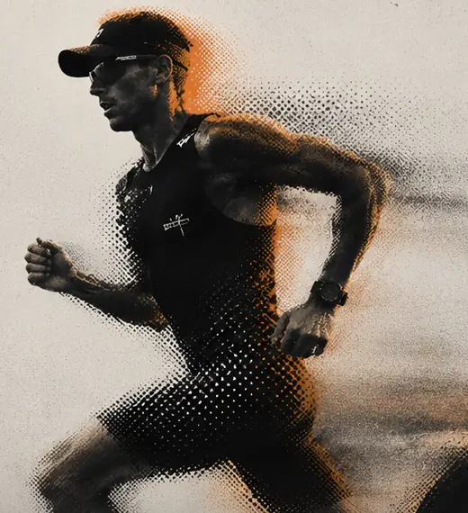

Aula 01
História, referênciase pré-produção
Aprenda a encontrar o verdadeiro filme antes de ligar a câmera.
PersonagemPesquisaDesejoConflitoTransformaçãoReferênciasLoglineRoteiroEntrevistaShot listLocaçõesCronograma
Resultado
Você chega à gravação sabendo exatamente qual história está tentando contar.